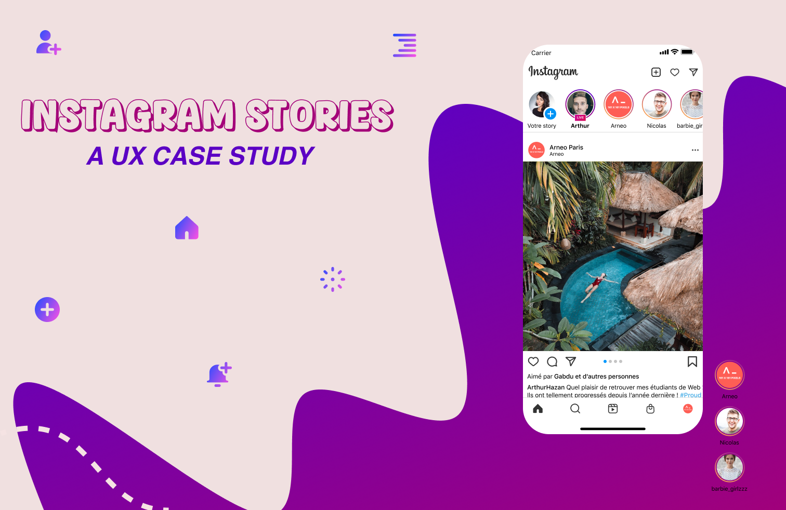
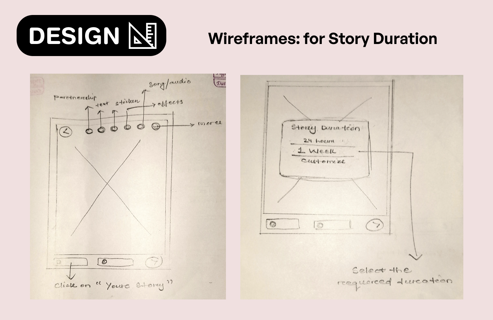
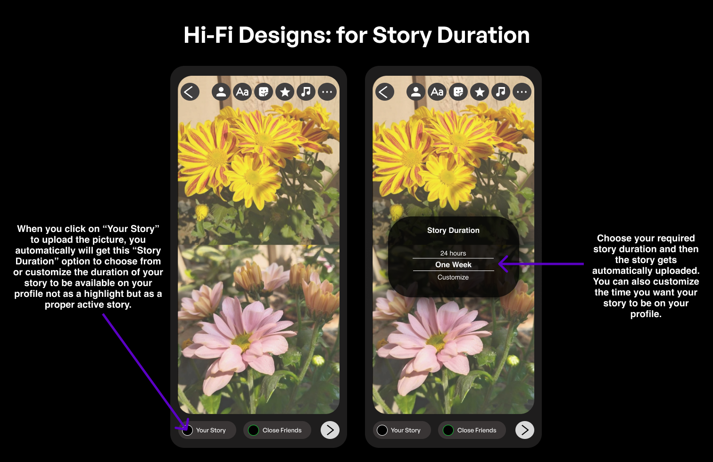

Giving people control over how long a story lasts
Three enhancements to Instagram stories — a custom story duration, in-app editing tools, and an archive option for highlights — grounded in a survey of 78 users.

Role
UX Designer
Type
Feature enhancement
Research
78 survey responses
Platform
Mobile app
Update · two years on
I made this case study two years ago. Instagram's new premium tier now covers several of the same ideas.
Instagram Plus is Meta's premium subscription service priced at $3.99 per month (or Rs 299 per month in India), offering exclusive features focused on Story control, audience insights, and profile customization.
Story Extend doubles a story's lifespan to 48 hours, and Multiple Story Audiences adds custom audience lists beyond Close Friends — close to the story-duration control this case study proposed.
01 · Overview
With Instagram stories being such a popular feature, users are eager for more flexibility and control over their content. However, limitations like the 24-hour time limit, lack of advanced editing tools, absence of a highlight archiving option, and noticeable quality drops after uploading create a need for enhancement.
Through this case study, I aim to explore solutions to address these issues, making Instagram stories more versatile, user-friendly, and visually appealing for users.
02 · Problem
Problem
Instagram stories are popular for sharing moments, but limitations impact user experience. Stories vanish after 24 hours, lack editing tools, don't allow highlight archiving, and often lose quality upon upload. This case study aims to propose enhancements to make stories more engaging, flexible, and visually appealing.
What can we do?
03 · Discover
User interviews and an online survey
Conducted an online survey of 75+ participants to gather insights into their challenges with Instagram stories.
74.4%
want to decide how long their stories stay on their profile, beyond 24 hours
98.7%
want basic editing — cropping, adjusting — inside the app instead of external apps
80.8%
want an archive option for highlights, the way posts already have one
n = 78 responses

04 · Competitive analysis
The competitive analysis shows major platforms like Instagram, Facebook, WhatsApp, and X lack key storytelling features. Fixed story durations, no highlight archive, and limited editing tools (offered only by WhatsApp and X) highlight gaps. Users are left wanting more flexibility and better tools for self-expression, presenting an opportunity to bridge these gaps with innovative solutions.

05 · User personas
Visual curators and efficiency seekers
Some users prioritize the aesthetics and overall feel of their profiles, while others focus more on functionality, valuing simplicity and ease of use over appearance.

06 · Design process

07 · Ideate
Solutions
In exploring potential solutions for the issues people raised, I developed a few possible approaches.
User flow
Two paths from the same entry point: upload a story with a chosen duration, or archive a highlight from the profile page.

08 · Design
Wireframes
The first pass put story duration next to the upload button and hid the rest behind a hamburger menu. Both were dropped: one crowded the upload action, the other buried familiar controls.




09 · Hi-Fi designs
Three additions, no new navigation
Story duration appears at the moment of upload, editing sits under the existing effects icon, and archiving joins the highlight menu people already open.



10 · Business impacts
Increased User Engagement
Extended story duration and better tools can keep users interacting longer.
Competitive Advantage
Unique features set Instagram apart from competitors, attracting new users.
Brand Loyalty
Addressing user needs builds trust and strengthens loyalty.
Higher Retention Rates
Improved features reduce frustrations, encouraging users to stay longer.
Revenue Growth
Improved features reduce frustrations, encouraging users to stay longer.
Market Expansion
Enhanced features can attract new demographics, broadening Instagram's user base.
11 · Learnings and challenges
Learnings
User Needs and Pain Points
Users want flexible story durations, better editing tools, and highlight archiving for easier storytelling.
Competitive Analysis Insights
Existing platforms lack key storytelling features, creating opportunities to boost engagement and satisfaction.
Design Priorities
Simple, accessible, and fast designs help users create appealing stories effortlessly.
Iterative Feedback
Testing prototypes with users emphasizes balancing functionality and usability to keep tools intuitive and meet user expectations.
Challenges
User Needs and Pain Points
Narrowing down the most impactful problems in Instagram stories.
Prioritizing Features
Choosing the most impactful features.
Balancing Usability and Innovation
Creating practical yet innovative solutions.
Feasibility
Ensuring solutions could be realistically implemented.
Next case study